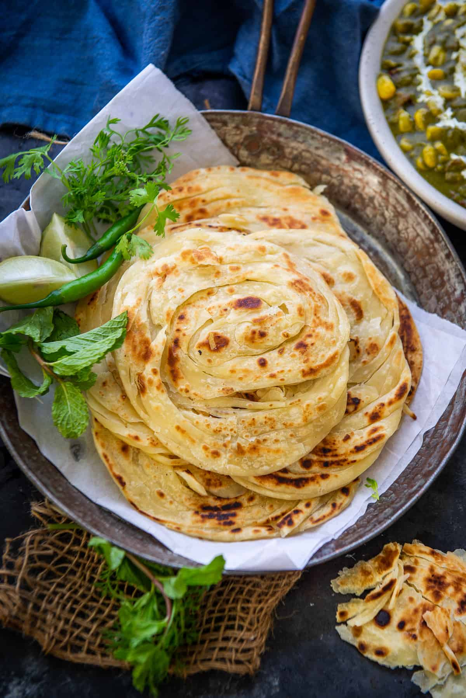

POROTTA

DESCRIPTION
Kerala Porotta is a soft, flaky, and layered flatbread popular in South India, especially in Kerala and Tamil Nadu. Made with all-purpose flour
, water, and a bit of oil, it is known for its crispy yet chewy texture and delicate layers.
INGREDIENTS
- 2 cups all-purpose flour (maida)
- 1 tbsp oil/ghee
- ½ tsp salt
- ½ cup water (adjust as needed)
- ¼ cup milk (optional, for softness)
- Oil (for layering & frying)
PROCEDURE
- Make Dough – Mix flour, salt, oil, and water (or milk) to form a soft dough. Rest for 1-2 hours.
- Divide & Roll – Divide dough into small balls. Roll each into a thin sheet.
- Create Layers – Apply oil, pleat like a fan, roll into a spiral, and flatten again.
- Cook on Tawa – Fry on a hot pan with oil until golden brown, flipping both sides.
- Fluff & Serve – Crush gently between hands for flaky layers. Enjoy with curry! 🫓🔥